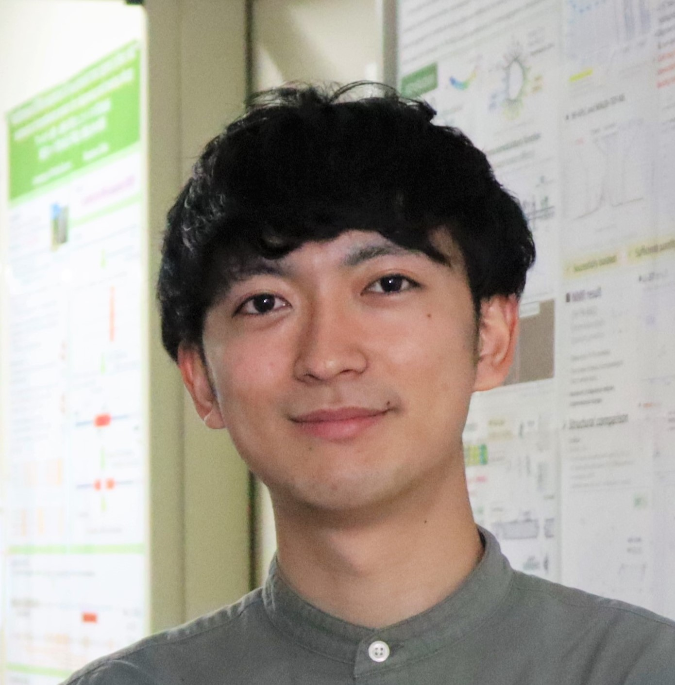
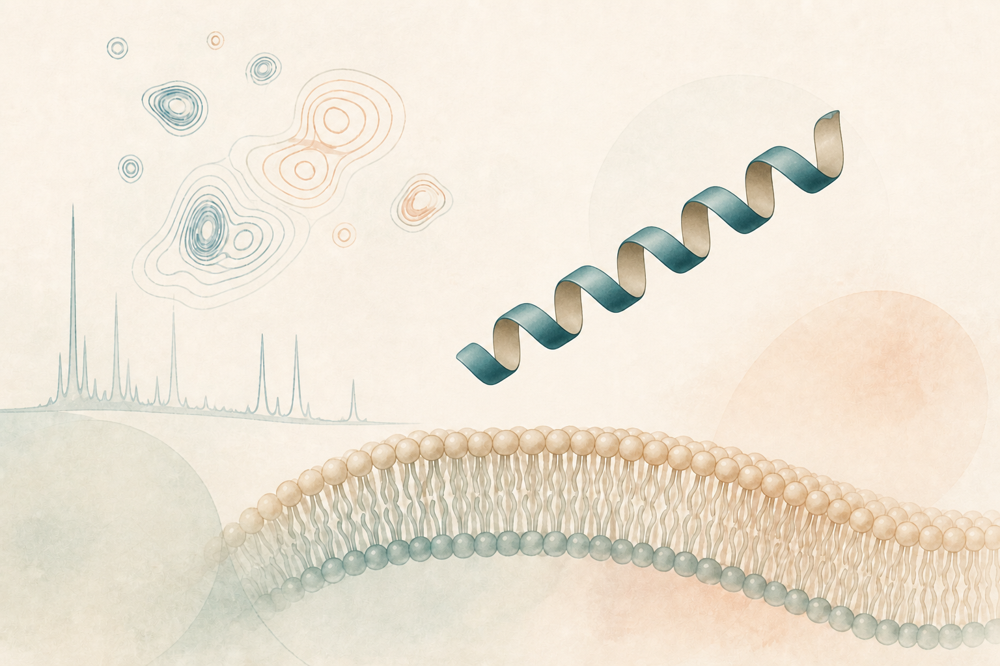

難発現ペプチドの組換え生産
凝集・分解しやすいペプチドを可溶性画分で生産するための、カルモジュリン融合タグを活用した手法を開発しています。

Mitsuki Shibagaki
北海道大学 大学院生命科学院 ソフトマター専攻 タンパク質科学研究室
日本学術振興会 特別研究員（DC1）
抗菌ペプチドの構造・機能・相互作用を、NMRやMDをなどの生物物理学的手法を活用して研究しています。

Research
生体防御を担う抗菌ペプチドに着目し、構造と機能の関係を分子レベルで理解することを目指しています。
凝集・分解しやすいペプチドを可溶性画分で生産するための、カルモジュリン融合タグを活用した手法を開発しています。
LL-37などの抗菌ペプチドが示す多量体化、膜との相互作用、近縁種間での構造的差異と機能の関連を調べています。
溶液中で変化するペプチドの構造と動きを捉え、生理的機能との関係を解析しています。
Publications
Mitsuki Shibagaki, et al.
Shaonan Yan, Hao Gu, Mitsuki Shibagaki, et al.
Chinonso Anthony Ezema, Mitsuki Shibagaki, Takashi Kikukawa, Tatsuya Arai, Tomoyasu Aizawa
Mitsuki Shibagaki
柴垣 光希
Mitsuki Shibagaki
Profile
Activities
学部生の頃に生物物理若手の会に出会い、2024年は第64回生物物理若手の会夏の学校の校長、2025年度は生物物理若手の会の会長を務めました。夏の学校の運営や支部セミナーの企画・運営、学会誌『生物物理』への寄稿など、若手研究者コミュニティを支える活動を行ってきました。
近年、アップデートの著しいAIツールの活用方法を共有し合う、若手研究者の交流団体の立ち上げを模索しています。
北海道大学大学院生命科学院によるインタビュー。
研究室メンバーとして、共同研究の取り組みを紹介。
CoSTEP21期本科のライティング・編集実践演習で、北海道大学の魅力を伝える小冊子を制作。
多様な研究分野・背景を持つ大学院生による国際協働プログラムに参加。
Hobbies
音楽、テニス、ウイスキー、グルメ巡りなど。特に音楽が好きで、バンドやアイドルのライブによく行きます。北大フォークソング研究会のメンバーと結成したオリジナルバンド「micromicron」では、ドラムを担当しています。